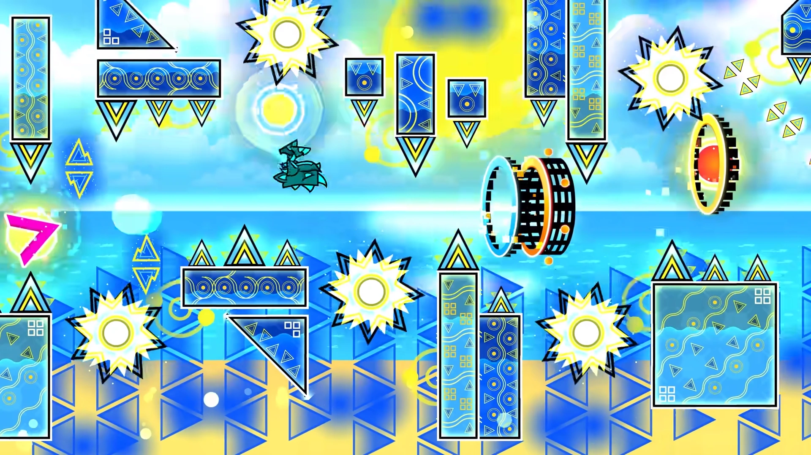
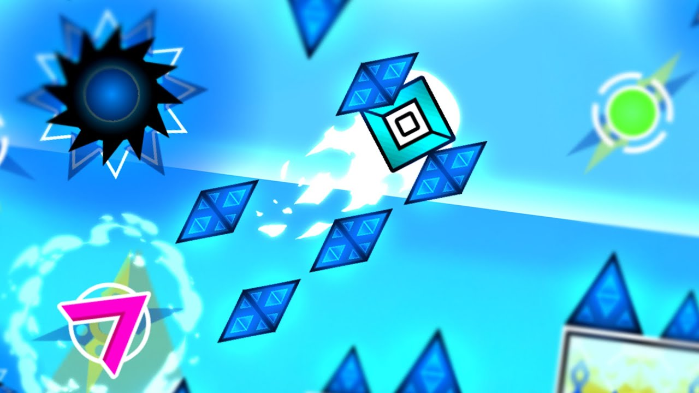

TIDAL WAVE

vidéo du niveau |
"Tidal Wave is an unrated 2.1 solo Extreme Demon level created and published by OniLink and verified by Zoink on 9 September 2023 after 49,534 attempts.[1] It is notable for its three-minute length, wave-based gameplay style similar to that of a Nine Circles level, its uniquely bright summer/beach theme and 200 frame-perfect timings,[2] more than double of any preceding Demon level. The level is also infamous for being much more difficult than it appears,[3] largely due to its open design and dense decoration. Tidal Wave received a generally positive reception from the community, with praise for its unique theme and length but criticism for its high object count and lack of detail in a few parts. OniLink had optimised the decoration from around 303,000 objects to 220,220 objects. Tidal Wave is set to place at #1 on the Demonlist, surpassing Avernus." |

